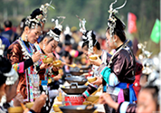
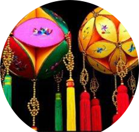
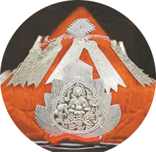
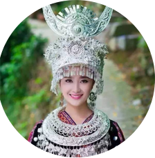

Spe Festivals
March 3 festival
"March 3" song wei, the third day of the third lunar month.Except artemisia glutinous rice, mainly held grand "song wei" activities.


The yao festival
The yao bird festival is a festival of the yao minority in China.Every year on the first day of February, the yao people celebrate this festival, which is the yao people's bird driving festival.

Miao slope will
"Gulongpo association" is a traditional festival of miao people in sirong county of rongshui miao autonomous county, which has a history of more than 100 years.
-

-

jing festival
"Ha" or "sing ha".Jingyu means "to sing", and "to sing ha festival" means "to sing festival".
-

Dragon quarter
Fanlong festival, also known as temple festival, is the annual maonan grand traditional festival.To MAO nan ...
Holiday wear
-

Hydrangea
The mascot of the people of a zhuang town, a token of love between a young man and a woman in a zhuang town.
-


Chest pocket
The corsage flower patterns of women in dong nationality mostly adopt the patterns of magpie, grain ear, litchi and other flowers and birds
-

tricorne
The old woman wore a blue cocked hat.It means four levels of eternal youth and a long life;Middle-aged women wear blue tricorn hats,
-


BirdS dress
Also known as lusheng clothing, it is a symbol of festivals, in the eyes of the miao people, it is sacred, solemn, luxurious, beautiful.
-


Miao tire
The artistic characteristics of miao silver ornaments are self-evident, and miao silver horns are almost half the height of the wearer.
Festival Food
-
Five colors sticky rice
Traditional snacks in the zhuang region
-
Wuzhou tortoise jelly
it is a rare medicine for the emperor in qing palace
-
glutinous
Mugwort ciba is "March 3"
must eat delicacies.
-


Chili bone
Miao flavor specialty, is the miao prepared food
-
Umea rice
n wuzhou, guangxi, eating rice is a traditional custom

-

The wind cake
A traditional food of the jing people